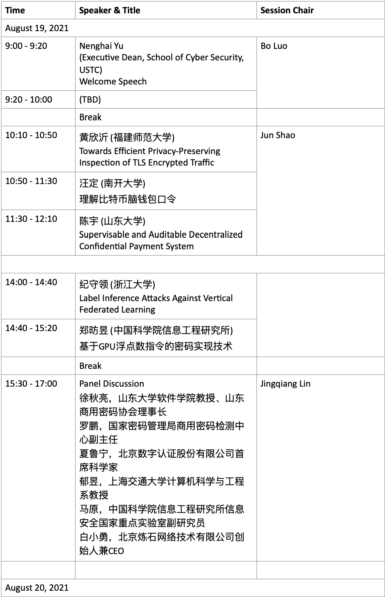
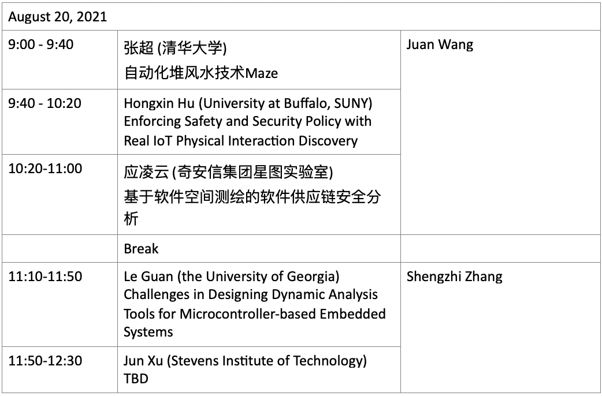

IMPORTANT DATES
Conference:
08/19/2021
08/20/2021
Jingqiang Lin, University of Science and Technology of China
Bo Luo, the University of Kansas, USA
Jun Shao, Zhejiang Gongshang University, China
Juan Wang, Wuhan University, China
Qiongxiao Wang, Institute of Information Engineering, Chinese Academy of Sciences
Kaiping Xue, University of Science and Technology of China
Shengzhi Zhang, Boston University Metropolitan College , USA
|
|
|---|
| Title: |
| Abstract: |
3rd International Workshop on Cyber Security and Data Privacy 2021 will take place virtually from August 19 to August 20.
 Due to the continuing impact and future unpredictability of the COVID-19 pandemic, CSDP 2021 will be held virtually using Tecent Meeting
| 08/19/21 & 08/20/21 |
|---|
|
会议主题：3rd International Workshop on Cyber Security and Data Privacy 会议时间：2021/08/19 08:00-2021/08/20 08:00 (GMT+08:00) 中国标准时间 - 北京 点击链接入会，或添加至会议列表： https://meeting.tencent.com/dm/n3d8YrrpxPH8 会议 ID：381 873 961 |